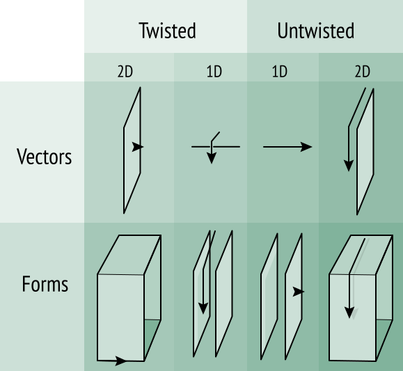

Twisted Differential Forms
The new concepts are better for unarguable reasons: they correctly represent a larger symmetry group, and therefore correctly represent more features of the real world. We have an intuitive appreciation of symmetry, even before we have formalized the concept. A representation that violates the symmetry leaves a bad taste in your mouth. I would argue that mechanics, for example, is unnecessarily difficult precisely because the basic symmetries are not properly represented.
